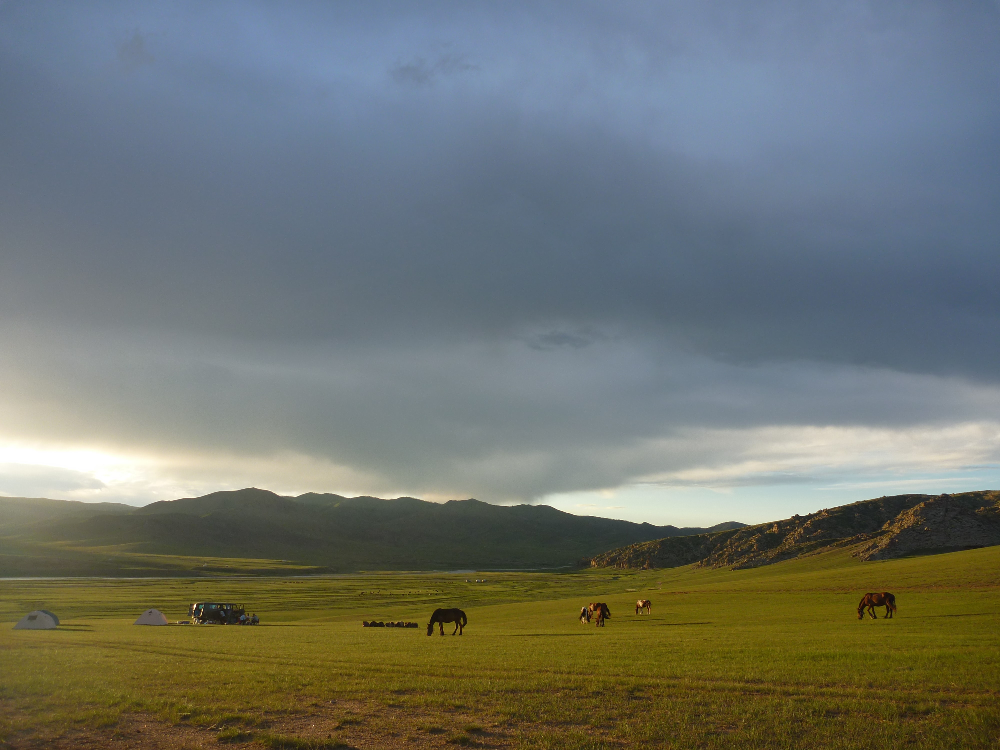
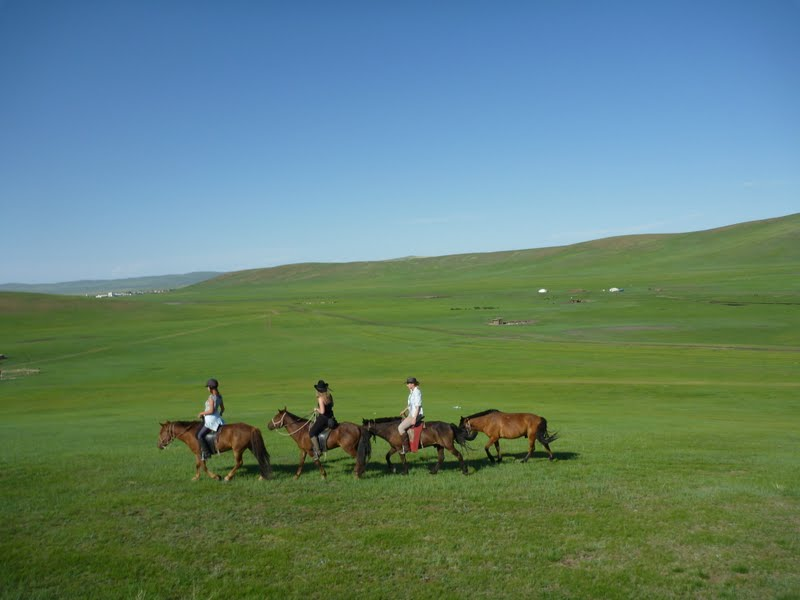
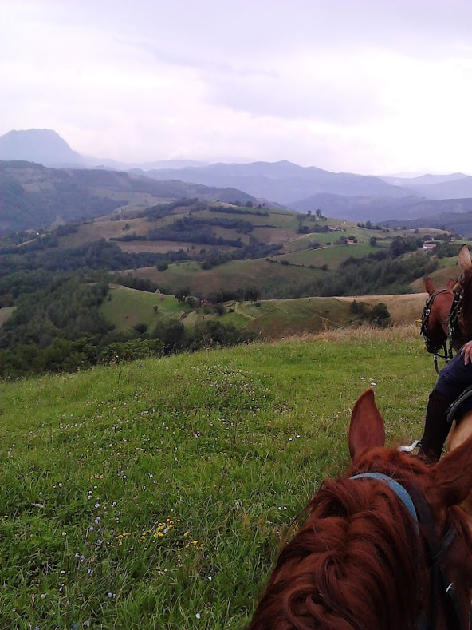
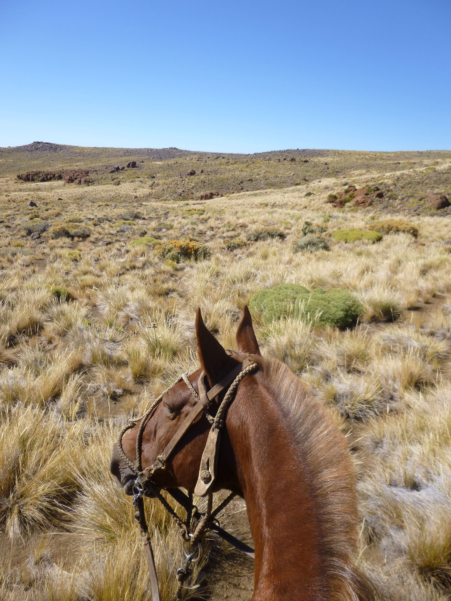
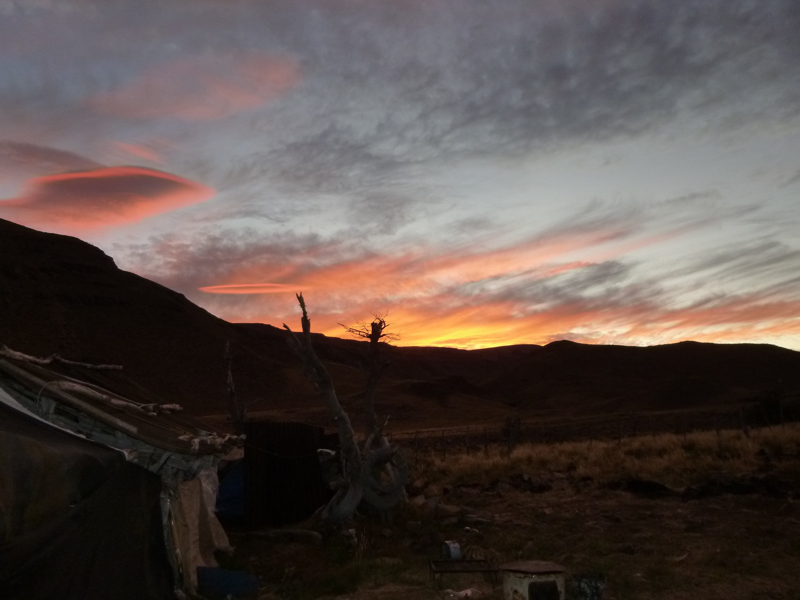

Mes randonnées équestres
Je suis partie en Mongolie en 2011 pour ma première randonnée équestre. C'était également mon premier voyage "seule", même si je rejoignais un groupe. C'était également la première fois que je montais plusieurs heures d'affilée sur plusieurs jours d'affilée. Et la première fois encore que je dormais sous la tente plus d'une nuit ! C'était aussi mon premier "grand voyage". Je n'étais encore jamais allée en Asie.
La Mongolie attire les cavaliers grâce aux steppes et à ces paysages sans fin. Ca a été un beau voyage, des paysages superbes pendant 15 jours et la découverte des chevaux mongols. Ces petits chevaux (un peu trop petits pour moi d'ailleurs !) que rien ne semblent arrêter et qui sont inépuisables.
J'avais également choisi ce pays pour la tradition équestre des mongols. Sur ce point mon coeur de cavalière occidentale qui considère les chevaux davantage comme des animaux de compagnie que comme des animaux "utiles" a été un peu choquée. Je n'ai en effet pas vraiment accroché aux méthodes que je jugeais violentes pour débourrer un jeune cheval qui n'avait commis, comme unique faute, d'avoir peur de l'homme qui lui montait dessus.
Je garde néanmoins de ce voyage des paysages magnifiques, des belles rencontres avec nos guides mongols, une découverte d'une culture inconnue pour moi et l'envie de repartir rapidement découvrir de cette façon d'autres pays et d'autres cultures.
Je suis ensuite partie en 2013 à Majorque, pour une semaine en étoile. Nous rentrions en effet tous les soirs à la "finca" où nous logions et où se trouvaient également les écuries. Tous les jours nous partions pour la journée à cheval. J'ai découvert le côté sauvage de Majorque. J'ai surtout découvert les chevaux criollo grâce à mon compagnon équin.
En 2014, je repars à l'aventure, cette fois-ci en Roumanie, dans les Carpates. La randonnée est prévue pour une semaine, avec deux journées en bivouac. Les trois autres jours, nous dormons dans une ferme accolée à l'écurie. Nous nous trouvons dans le village de Sinca Noua, premier éco-village de Roumanie. La ferme et l'écurie sont tenues par un couple d'allemands, biologistes qui ont créé une fondation pour que la région autour de Sinca Noua soit déclarée parc naturel. Ils étudient également les grands prédateurs de la région comme les ours, les lynxs et les loups.
En rentrant de cette randonnée, je décide de devenir végétarienne et de n'acheter que des produits locaux. Durant ma semaine en Roumanie, je n'ai rarement aussi bien mangé. Tout ce qui se trouvait sur la table provenait de la ferme, exception faite du fromage, qui lui, venait du village.
J'ai également décidé que la prochaine randonnée se ferait en mode "bivouac". J'aime cette sensation d'avancer, de planter sa tente et de se réveiller le lendemain matin par le bruits des chevaux qui broutent l'herbe.
En mars 2016 je pars en Argentine et plus précisément en Patagonie. Cette randonnée fut une révélation. J'ai eu beaucoup de difficultés à revenir dans la vie parisienne et urbaine. Pendant 10 jours, je me suis coupée du monde. Je n'ai eu ni téléphone, ni portefeuille, ni carte bancaire, ni passeport. Je n'ai pas eu de toit fixe au-dessus de ma tête durant 10 jours et j'ai vécu avec les chevaux.
Contrairement à la Mongolie, j'apprends beaucoup de notre guide, Ceferino, qui s'occupe des chevaux. Il est toujours patient, toujours calme et il ne fait jamais de gestes brusques à proximité des chevaux. Il est à la fois calme et direct dans ses demandes. J'essaye d'apprendre en l'observant.
Pour plus de photos de la Patagonie, aller voir ICI